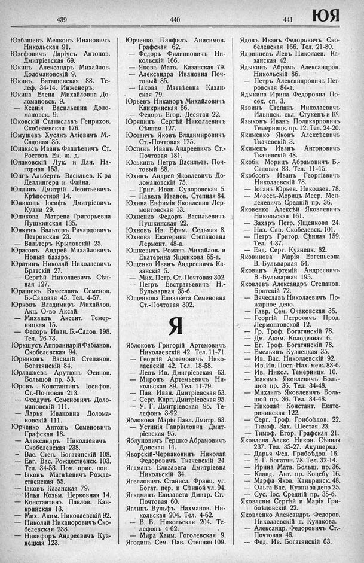

Лист источника 497
Скан

Распознанный текст
439
Юзбашевъ Мелконъ Инановичъ
Никольская 91.
Юзефовичъ Даріусъ Антонов.
Дмитріевская 69.
Юкинъ Александръ Михайлов.
Доломановскій 9.
Юкинъ. Баташевская 88. Те-
леф. 34-14. Инженеръ.
Юкина Елена Михайловна До-
ломановск. 9.
— Ксенія Васильевна Доло-
мановск. 9.
Юковскій Станиславъ Генрихов.
Скобелевская 176.
Юмушевъ Хусанъ Аліевичъ М.-
Садовая 35.
Юнакасъ Иванъ Фаддѣевичъ Ст.
Ростовъ Ек. ж. д.
Юнаковскій Лук. и Дан. На-
горная 153.
Юнгъ Альбертъ Васильев. К-ра
Деллингера и Файна.
Юндинъ Дмитрій Леонтьевичъ
Крѣпостной 14.
Юниковъ Іосифъ Дмитріевичъ
Кузни 29.
Юникова Матрена Григорьевна
Пушкинская 135.
Юнкунъ Вальтеръ Ричардовичъ
Петровская 23.
— Вальтеръ Крыловскій 25.
Юрасовъ Андрей Михайловичъ
Новый баSigns
базаръ.
Юратинъ Николай Николаевичъ
Братскій 27.
— Сергѣй Николаевичъ Сѣн-
ная 127.
Юрашекъ Вячеславъ Семенов.
Б.-Садовая 45. Тел. 4-57.
Юрковъ Владимиръ Михайлов.
Акц. О-во Аксай.
— Михаилъ Аксент. Темер-
ницкая 15.
— Федоръ Иван. Б.-Садов. 198.
Тел. 26-73.
Юркшусъ Апполинарій Фабіанов.
Скобелевская 94.
Юрниковъ Василій Степанов.
Богатянскій 84.
Юрладжевъ Арутюнъ Осипов.
Большой пр. 53.
Юровъ Константинъ Іосифов.
Ст.-Почтовая 213.
— Феодулъ Семеновичъ Доло-
мановскій 111.
— Дарья Ивановна Долома-
новскій 111.
Юрченко Антонъ Семеновичъ
Графская 18.
— Александръ Николаевичъ
Скобелевская 238.
— Вас. Степ. Богатянскій 108.
— Евг. Вас. Рождественск. 103.
Тел. 34-53. Пом. прис. пов.
— Іаковъ Матвѣевичъ Рожде-
ственская 55.
— Іаковъ Казанская 79.
— Илья Козьм. Церковная 14.
— Константинъ Павлов. Кан-
кринская 13.
— Мих. Аким. Николаевскій 92.
— Николай Никаноровичъ Ско-
белевская 238.
— Никифоръ Андреевичъ Куз-
нецкая 123.
440
Юрченко Панфилъ Анисимов.
Графская 62.
— Федоръ Филипповичъ Ни-
кольскій 166.
— Яковъ Матв. Казанская 79.
— Александра Ивановна Поч-
товый 85.
— Іакова Матвѣевна Казан-
ская 79.
Юрьевъ Никаноръ Михайловичъ
Канкринская 56.
— Федоръ Егор. Десятая 22.
Юряпинъ Сергѣй Николаевичъ
Сѣнная 127.
Юсевичъ Яковъ Владимировичъ
Ст.-Почтовая 175.
Юстинъ Иванъ Андреевичъ Ст.-
Почтовая 181.
Юськинъ Петръ Васильев. Поч-
товый 88.
Юхинъ Андрей Яковлевичъ До-
ломановскій 75.
— Григ. Иван. Суворовская 5.
— Павелъ Иванов. Степная 84.
Юхина Евфимія Яковлевна Лер-
монтовская 13.
Юхненко Федоръ Васильевичъ
Пушкинская 22.
Юхновъ Ив. Ефим. Седьмая 8.
Юхнова Екатерина Степановна
Лермонт. 48-а.
Юшкевичъ Романъ Михайлов. и
Екатерина Ященкова 65-а.
Ющенко Иванъ Андреевичъ Ка-
занскій 5.
— Мих. Петр. Ст.-Почтовая 302.
— Петръ Евстратьевичъ Н.-
Бульварная 35-б.
Ющенкова Елизавета Семеновна
Ст.-Почтовая 302.
Я
Яблоковъ Григорій Артемовичъ
Николаевскій 42. Тел. 11-71.
— Георгій Артемовичъ Нико-
лаевскій 42. Тел. 18-58.
— Левъ Ив. Дмитріевская 63.
— Миронъ Артемьевичъ Ни-
кольская 89. Тел. 11-79.
— Пав. Иван. Дмитріевская 63.
— Серг. Карп. Дмитріевская 95.
— У. Г. Дмитріевская 95. Те-
лефонъ 3-92.
Яблокова Марія Павл. Дмитр. 63.
— Устинія Гавріиловна Дмит-
ріевская 95.
Яблуновичъ Гершко Абрамовичъ
Донская 14.
Яворскій-Черваковинъ Николай
Федоровичъ Ткачевскій 24.
Ягдманъ Елизавета Дмитріевна
Никольскій 34.
Ягелловичъ Станисл. Франц. уг.
Богат. пер. и Сѣнной ул. 94.
Ягкдманъ Елизавета Дмитр. Ст.-
Почтовая 60.
Яглинъ Вульфъ Нахманов. Ни-
кольская 204. Тел. 4-62.
— В. Б. Никольская 204. Те-
лефонъ 4-62.
— Мира Хаим. Гоголевская 9.
Ягодинъ Сем. Пав. Степная 109.
441
ЮЯ
Ядовъ Иванъ Федоровичъ Ско-
белевская 166. Тел. 21-80.
Ядринцевъ Левъ Николаев. Ка-
занская 42.
Ядыкинъ Абрамъ Александров.
Никольскій 86.
— Петръ Александровичъ Пет-
ровская 84-а.
Ядыкина Ирина Федоровна По-
сох. сп. 3.
Язвинъ Степанъ Николаевичъ
Ильинск. скл. Стукенъ и К°.
Языковъ Иванъ Поликарповичъ
Темерницк. пр. 12. Тел. 24-20.
Якименко Яковъ Алексѣевичъ
Ткачевскій 3.
Якимецъ Иванъ Антоновичъ
Ткачевскій 48.
Якоби Морицъ Абрамовичъ Б.-
Садовая 83. Тел. 11-15.
Якобсонъ Иванъ Георгіевичъ
Николаевскій 78.
— Іоганъ Юрьев. Николаев. 78.
— Мозесъ-Морицъ Меер. Мен-
делевичъ Средній пр. 36.
Яковенко Алексѣй Яковлевичъ
Никольская 161.
— Захаръ Петр. Ященкова 24.
— Наз. Сав. Скобелевск. 101.
— Петръ Григор. Сѣнная 159.
Тел. 4-37.
— Евд. Серг. Кузнецк. 82.
Яковинова Марія Евгеньевна
В.-Бульварная 64.
Яковинъ Артемій Андреевичъ
В.-Бульварная 195.
Яковлевъ Александръ Степанов.
Братскій 72.
— Вячеславъ Николаевичъ По-
жарное депо.
— Гавр. Сем. Очаковская 35.
— Георгій Петровичъ Прод.
Лермонтовской 12.
— Гр. Троф. Богатянскій 78.
— Дм. Аким. Колодезная 6.
— Ег. Троф. Богатянскій 78.
— Емельянъ Кузнецкая 35.
— Ив. Вас. Николаевскій 92.
— Ив. Ив. Пост.-Нах. меж. 83-б.
— Ив. Никол. Темерницк. 10.
— Іоакимъ Яковлевичъ Боль-
шой пр. 36. Тел. 34-48.
— Михаилъ Яковлевичъ Боль-
шой пр. 36. Тел. 34-48.
— Николай Констант. Екате-
рининская 122.
— Серг. Троф. Грибоѣдов. 22.
— Тимоф. Зах. Шестая 23.
— Тимоф. Егор. Графская 21.
Яковлева Алекс. Никон. Сѣнная
237. Тел. 35-27. Акушерка.
— Дарья Фед. Грибоѣдов. 16.
— Е. Г. Богатян. 78. Тел. 32-14.
— Ирина Матв. Больш. пр. 36.
— Клавд. Ант. пр. Коцебу 16.
— Марфа Яков. Канкринск. 48.
— Ольга Вас. Кузни за депо 25.
— Сус. Іос. Средній пр. 35-б.
Яковлевы Сергѣй и Марія Гри-
боѣдовскій 22.
Яковленко Александръ Федоров.
Николаевскій д. Кулакова.
— Александръ Федоровичъ Ст.-
Почтовая 46.
— Фед. Ив. Богатянскій 63.